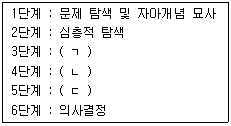
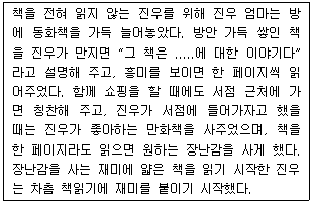
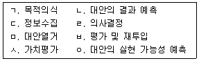
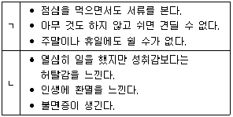
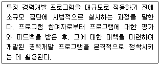
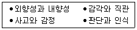
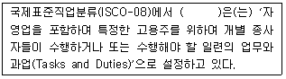
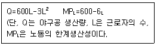
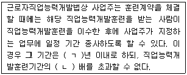
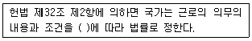

직업상담사-2급 (2016-08-21 기출문제)
1과목: 직업상담학
1. 역할사정에서 상호역할관계를 사정하는 방법이 아닌 것은?
- 질문을 통해 사정하기
- 동그라미로 역할관계를 그리기
- 역할의 위계적 구조 작성하기
- 생애-계획 연습으로 전환하기
(정답률: 77%)

2. Super가 제시한 발달적 직업상담 단계에서 다음 ( )에 알맞은 것은?

- ㄱ: 태도와 감정의 탐색과 처리, ㄴ: 현실검증, ㄷ: 자아수용 및 자아통찰
- ㄱ: 현실검증, ㄴ: 태도와 감정의 탐색과 처리, ㄷ: 자아수용 및 자아통찰
- ㄱ: 현실검증, ㄴ: 자아수용 및 자아통찰, ㄷ: 태도와 감정의 탐색과 처리
- ㄱ: 자아수용 및 자아통찰, ㄴ: 현실검증, ㄷ: 태도와 감정의 탐색과 처리
(정답률: 79%)
3. 정신분석에 관한 설명으로 틀린 것은?
- 분석가의 중립적 태도는 내담자의 전이를 촉진시키는데 중요하다.
- 해석은 자유연상이나 꿈, 저항, 전이 등을 분석하여 그 의미를 설명해 주는 것이다.
- 저항에 대한 주의를 환기시킨 후에 저항을 해석해 주어야 한다.
- 현재몽은 잠재몽에 대한 자유연상을 통해 더 쉽게 이해할 수 있다.
(정답률: 68%)
4. Rogers가 제시한 내담자 변화의 필요충분조건은?
- 공감, 수용, 일치
- 의식, 전의식, 무의식
- 감각, 알아차림, 접촉
- 비합리적 신념, 논박, 결과
(정답률: 82%)
5. 다음 중 예상되는 신체적, 정신적인 긴장을 약화시켜 내담자가 충분히 자신의 문제를 다룰 수 있도록 준비시키는데 사용되는 인지적 행동주의 기법은?
- 인지적 재구조화
- 스트레스 접종
- 사고정지
- 행동계약
(정답률: 70%)
6. 직업 상담에서 내담자가 검사 도구에 대해 비현실적 기대를 가지고 있을 때 상담사가 취할 수 있는 행동으로 가장 적합한 것은?
- 즉시 검사를 실시한다.
- 검사 사용 목적에 대하여 내담자에게 설명한다.
- 추천되는 검사를 상담사가 정해준다.
- 심리검사는 상담관계를 방해하므로 실시하지 않는다.
(정답률: 89%)
7. 실존주의 상담에 관한 설명으로 틀린 것은?
- 실존주의 상담의 궁극적 목적은 치료이다.
- 실존주의 상담은 대면적 관계를 중시한다.
- 인간에게 자기지각의 능력이 있다고 가정한다.
- 자유와 책임의 양면성에 대한 지각을 중시한다.
(정답률: 72%)
8. 다음 중 Butcher가 제안한 집단직업상담을 위한 3단계 모형에 해당하지 않는 것은?
- 탐색단계
- 계획단계
- 전환단계
- 행동단계
(정답률: 84%)
9. 상담자가 내담자와 상담한 내용에 대해 보고할 의무가 없는 상황은?
- 내담자가 적개심이 강할 때
- 가족을 폭행했을 때
- 내담자가 범법행위를 했을 때
- 미성년자로 성적인 학대를 당한 희생자일 때
(정답률: 87%)
10. 상담 장면에서 인지적 명확성이 부족한 내담자를 위한 개입방법이 아닌 것은?
- 잘못된 정보를 바로 잡아줌
- 구체적인 정보를 제공함
- 원인과 결과의 착오를 바로 잡아줌
- 가정된 불가피성에 대해 지지적 상상을 제공함
(정답률: 83%)
11. 상담을 효과적으로 진행하는 데 장애가 되는 면담 태도는?
- 내담자와 유사한 언어를 사용하는 태도
- 분석하고 충고하는 태도
- 비방어적 태도로 내담자를 편안하게 만드는 태도
- 경청하는 태도
(정답률: 88%)
12. 정신역동적 집단상담의 장점이 아닌 것은?
- 자신의 방어와 저항에 대해 좀 더 극적인 통찰을 얻을 수 있다.
- 다른 집단원이나 상담자에게 전이감정을 느끼며 훈습할 기회가 많아 자기 이해를 증진할 수 있다.
- 다른 집단원의 작업을 관찰함으로써 자신이 의식하지 못했던 감정을 가지고 있음을 이해하게 된다.
- 집단상담자의 분석은 상담자와 집단원의 독점적 관계에서 전이적 소망을 충족시켜 주므로 치료를 촉진시킨다.
(정답률: 77%)
13. 상담기법에 관한 설명으로 옳은 것은?
- 경청은 내담자의 행동을 제외한 모든 말을 항상 세심하게 주목하는 것을 말한다.
- 반영은 내담자의 말을 정확하게 반복하여 되돌려주는 기법이다.
- 명료화는 내담자의 말이나 행동 이면에 있는 무의식적 갈등을 가설의 형태로 제시하는 것이다.
- 직면은 내담자가 모르고 있거나 인정하기를 거부하는 생각과 느낌에 대해 주목하도록 하는 것이다.
(정답률: 72%)
14. Williamson의 변별진단에서 4가지 결과에 해당하지 않는 것은?
- 직업선택에 대한 확신 부족
- 직업 무선택
- 정보의 부족
- 흥미와 적성의 모순
(정답률: 78%)
15. 진로 및 직업선택에 관한 설명으로 틀린 것은?
- 흥미와 능력은 항상 일치하는 것은 아니다.
- 직업선택 결정에서 적성 및 지능검사의 결과에만 의존하지는 않는다.
- 직업흥미가 아동기 초기 경험으로부터 결정된다는 관점은 환경적응론이다.
- 직업적 흥미는 성격특성과 자아개념에 따라 변화한다.
(정답률: 86%)
16. 다음에서 진우 엄마가 사용하고 있는 기법은?

- 조형법
- 토큰법
- 타임아웃
- 변별적 강화
(정답률: 63%)
17. 직업상담사의 윤리에 관한 설명으로 옳은 것은?
- 내담자 개인 및 사회에 임박한 위험이 있다고 판단되더라도 개인정보와 상담내용에 대한 비밀을 유지해야 한다.
- 자기의 능력 및 기법의 한계를 넘어서는 문제에 대해서는 다른 전문가에게 의뢰해야 한다.
- 심층적인 심리상담이 아니므로 직업상담은 비밀유지 의무가 없다.
- 상담을 통해 내담자가 도움을 받지 못하더라도 내담자보다 먼저 종결을 제안해서는 안 된다.
(정답률: 84%)
18. 특성요인 직업상담에 관한 설명으로 옳은 것은?
- 상담의 내용은 내담자의 흥미나 선호에 기반한다.
- 상담자의 역할은 지지자의 역할과 같다.
- 과학적이고 합리적인 문제해결 방법을 따른다.
- 상담자는 반응적이고 배려적 역할을 한다.
(정답률: 66%)
19. 교류분석적 상담에 관한 설명으로 틀린 것은?
- 대부분의 다른 이론과는 달리 계약적이고 의사결정적이다.
- 새로운 결정을 내릴 수 있는 개인의 능력을 강조한다.
- 현재를 온전히 음미하고 경험하는 학습을 강조한다.
- 개인 간 그리고 개인 내부의 상호작용을 분석하기 위한 구조를 제공한다.
(정답률: 54%)
20. 생애진로사정에 관한 설명으로 틀린 것은?
- 상담자와 내담자가 처음 만났을 때 이용할 수 있는 구조화된 면접기법이며 표준화된 진로사정 도구의 사용이 필수적이다.
- Adler의 심리학 이론에 기초하여 내담자와 환경과의 관계를 이해하는 데 도움을 주는 면접기법이다.
- 비판단적이고 비위협적인 대화 분위기로써 내담자와 긍정적인 관계를 형성하는 데 도움이 된다.
- 생애진로사정에서는 작업자, 학습자, 개인의 역할 등을 포함한 다양한 생애역할에 대한 정보를 탐색해간다.
(정답률: 61%)
2과목: 직업심리학
21. Selye가 제시한 일반적응증후군(General Adaptation Syndrome)의 반응단계에 해당하지 않는 것은?
- 경계단계
- 적응단계
- 저항단계
- 소진단계
(정답률: 79%)
22. Gelatt가 제시한 의사 결정 과정을 순서대로 바르게 나열한 것은?

- ㄱ → ㄷ → ㅁ → ㄴ → ㅇ → ㅅ → ㄹ → ㅂ
- ㄱ → ㄷ → ㅅ → ㅇ → ㄴ → ㅁ → ㄹ → ㅂ
- ㄱ → ㄷ → ㅁ → ㅅ → ㄴ → ㅇ → ㄹ → ㅂ
- ㄱ → ㄷ → ㅇ → ㅁ → ㅅ → ㄴ → ㄹ → ㅂ
(정답률: 68%)
23. 문항 난이도에 관한 설명으로 틀린 것은?
- 문항 난이도 지주는 전체 응답자 중 특정 문항을 맞춘 사람들의 비율로서 0.0에서 1.0의 값을 갖는다.
- 문항이 어려울수록 검사점수의 변량이 낮아져서 검사의 신뢰도가 낮아진다.
- 문항의 난이도가 0.5일 때 검사점수의 분산도가 최대가 된다.
- 문항 난이도 지수가 높을수록 어려운 문제이다.
(정답률: 60%)
24. 직업선호도 검사에 관한 설명으로 틀린 것은?
- 직업흥미검사, 지능검사, 생활사 검사로 구성된다.
- 직업흥미검사의 목적은 개인에게 적합한 직업선정에 있다.
- 생활사 검사는 개인의 과거 또는 현재의 생활특성을 통해 직업선택시 고려될 수 있는 정보를 제공한다.
- 시간상 제약이 있을 경우에는 직업흥미검사만으로도 직업선정이 가능하다.
(정답률: 56%)
25. 다음중 전직을 예방하기 위해 퇴직의사 보유자에게 실시하는 직업상담 프로그램으로 가장 적합한 것은?
- 직업복귀 프로그램
- 실업충격완화 프로그램
- 조기퇴직계획 프로그램
- 직장스트레스 대처 프로그램
(정답률: 69%)
26. 다음 설명에 해당하는 행동특성을 바르게 짝지은 것은?

- ㄱ : 내적 통제소재, ㄴ : 외적 통제소재
- ㄱ : A형 성격, ㄴ : B형 성격
- ㄱ : 과다 과업지향성, ㄴ : 과다 인간관계지향
- ㄱ : 일 중독증, ㄴ : 소 진
(정답률: 81%)
27. Roe의 직업분류체계에 관한 설명으로 틀린 것은?
- 일의 세계를 8가지 장(Field)과 6가지 수준(Level)으로 구성된 2차원의 체계로 조직화했다.
- 원주상의 순서대로 8가지 장(Field)은 서비스, 사업상 접촉, 조직, 기술, 옥외, 과학, 예술과 연애, 일반문화이다.
- 서비스 장(Field)들은 사람지향적이며 교육, 사회봉사, 임상심리 및 의술이 포함된다.
- 6가지 수준(Level)은 근로자의 직업과 관련된 정교화, 책임, 보수, 훈련의 정도를 묘사하며, 수준1이 가장 낮고, 수준 6이 가장 높다.
(정답률: 70%)
28. Lofquist와 Dawis의 직업적응이론에서 직업적응유형의 개념에 관한 설명으로 틀린 것은?
- 일관성(Consistency) : 수행해야 할 다양한 작업들 간의 부조화를 참아내는 정도
- 끈기(Perseverance) : 환경이 자신에게 맞지 않아도 개인이 얼마나 오랫동안 견뎌낼 수 있는지의 정도
- 적극성(Activeness) : 개인이 작업환경을 개인적 방식과 좀 더 조화롭게 만들어가려고 노력하는 정도
- 반응성(Reactiveness) : 개인이 작업성격의 변화로 인해 작업환경에 반응하는 정도
(정답률: 75%)
29. Lazarus의 스트레스 이론에 관한 설명으로 틀린 것은?
- 스트레스 사건 자체보다 지각과 인지 과정을 중시하는 이론이다.
- 1차 평가는 사건이 얼마나 위협적인지를 평가하는 것이다.
- 2차 평가는 자신의 대처 능력에 대한 평가이다.
- 3차 평가는 자신의 스트레스 반응에 대한 평가이다.
(정답률: 62%)
30. 직무분석을 위하여 사용되는 표준화된 조사지 중 PAQ(Postion Analysis Questionnaire)는 어떤 유형인가?
- 작업자중심적
- 직무중심적
- 수행중심적
- 과제중심적
(정답률: 52%)
31. 한 검사에서의 점수와 나중에 그 사람이 실제로 직무를 수행할 때의 수행수준 간 관련성이 높을 때 그 검사는 어떤 타당도가 높다고 하는가?
- 구성타당도
- 내용타당도
- 예언타당도
- 동시타당도
(정답률: 76%)
32. 심리검사는 다양한 기준을 적용하여 분류할 수 있다. 검사의 실시방법에 따른 분류에 해당하지 않는 것은?
- 규준참조검사와 준거참조검사
- 속도검사와 역량검사
- 개인검사와 집단검사
- 지필검사와 수행검사
(정답률: 64%)
33. 직무분석 기법 중 직무 수행자의 직무 행동 가운데 성과와 관련하여 효과적인 행동과 비효과적인 행동을 구분하여 직무를 분석하는 방법은?
- 작업수행 조사체계(WPSS)
- 중요사건 기법(CIT)
- 강제선택 체크리스트(FCCL)
- 기능적 직무분석(DPT)
(정답률: 66%)
34. 다음 중 개인의 진로발달 과정에서 사회나 환경의 영향을 상대적으로 가장 많이 고려하는 이론은?
- Parsons의 특성이론
- 의사결정이론
- Roe의 욕구이론
- Super의 발달이론
(정답률: 52%)
35. Smith등이 개발한 직무기술지표(JDI)에서 측정하는 대상이 아닌 것은?
- 임금에 대한 만족
- 일 자체에 대한 만족
- 회사 정책에 대한 만족
- 승진 기회에 대한 만족
(정답률: 57%)
36. Krumboltz의 사회학습이론에 관한 설명으로 틀린 것은?
- 진로결정에 영향을 미치는 요인으로 유전적 요인, 환경적 조건, 학습경험, 과제접근 기술 등 4가지를 제시하고 있다.
- 강화이론, 고전적 행동주의이론, 인지적 정보처리이론에 기원을 두고 있다.
- 진로결정 요인들이 상호작용하여 자기관찰 일반화와 세계관 일반화를 형성한다.
- 학과 전환 등 진로의사결정과 관련된 개인의 행동에 대해서는 관심을 두지 않고 있다.
(정답률: 75%)
37. 다음은 어떤 경력개발 프로그램 개발 과정에 해당하는가?

- 요구조사(Need Assessment)
- 자문(Consulting)
- 팀 빌딩(Team building)
- 파일럿 연구(Pilot Study)
(정답률: 79%)
38. 심리검사에서 사용되는 원점수에 관한 설명으로 틀린 것은?
- 그 자체로는 거의 아무런 정보를 주지 못한다.
- 기준점이 없기 때문에 특정 점수의 크기를 표현하기 어렵다.
- 척도의 종류로 볼 때 등간척도에 불과할 뿐 사실상 서열척도가 아니다.
- 서로 다른 검사의 결과를 동등하게 비교할 수 없다.
(정답률: 65%)
39. 다음 내용을 다룬 검사는?

- GATB
- VPT
- CPI
- MBTI
(정답률: 74%)
40. 직업발달이론 중 발달적 이론에 관한 설명으로 옳은 것은?
- Super의 평생발달이론 : 광범위한 의미에서의 자아의 발달로, 개인의 종합적인 인지발달과 의사결정 과정이 중점이 된다.
- Ginzberg의 발달이론 : 직업발달단계를 환상기 – 잠정기 – 현실기의 3단계로 구분한다.
- Tiedman 과 O’Hara의 발달이론 : 사람들은 직업세계에서 자신의 사회적 공간, 지적 수준, 성 유형에 맞는 직업을 선택한다고 보았다.
- Gottfredson의 직업포부 발달이론 : 생애공간 접근법이라고도 한다.
(정답률: 74%)
3과목: 직업정보론
41. 직업선택 결정모형을 기술적 직업결정모형과 처방적 직업결정모형으로 분류할 때 기술적 직업결정모형에 해당하지 않는 것은?
- 브룸의 모형
- 힐튼의 모형
- 카츠의 모형
- 타이드만과 오하라의 모형
(정답률: 55%)
42. 국가기술자격종목과 그 직무분야의 연결이 틀린 것은?
- 가스산업기사 – 환경 · 에너지
- 건설안전산업기사 – 안전관리
- 광학기기산업기사 – 전기 · 전자
- 방수산업기사 – 건설
(정답률: 53%)
43. 국가기술자격에 해당하지 않는 자격종목은?
- 기업리스크관리사
- 멀티미디어콘텐츠제작전문가
- 텔레마케팅관리사
- 국제의료관광코드네이터
(정답률: 57%)
44. 다음 ( )에 알맞은 것은?

- 직무
- 직업
- 직위
- 직군
(정답률: 69%)
45. 한국표준산업분류에서 산업분류의 적용원칙에 관한 설명으로 틀린 것은?
- 생산단위는 산출물뿐만 아니라 투입물과 생산공정 등을 함께 고려하여 그들의 활동을 가장 정확하게 설명된 항목에 분류해야 한다.
- 복합적인 활동단위는 우선적으로 세세분류단계를 정확히 결정하고, 순차적으로 세, 소, 중 단계 항목을 결정하여야 한다.
- 동일단위에서 제조한 재화의 소매활동은 별개 활동으로 파악되지 않고 제조활동으로 분류 되어야 한다. 그러나 자기가 생산한 재화와 구입한 재화를 함께 판매한다면 주 주된 활동에 따라 분류한다.
- “공공행정 및 국방 , 사회보장사무” 이외의 다른 산업활동을 수행하는 정보기관은 그 활동의 성질에 따라 분류하여야 한다.
(정답률: 75%)
46. 국가 직업훈련에 관한 정보를 검색할 수 있는 정보망은?
- JT-Net
- HRD-Net
- T-Net
- Training-Net
(정답률: 80%)
47. 한국표준산업분류에서 각 생산단위가 노동, 자본, 원료 등 자원을 투입하여, 재화 또는 서비스를 생산 또는 제공하는 일련의 활동 과정은?
- 산업
- 산업활동
- 생산활동
- 생산
(정답률: 63%)
48. 민간직업정보의 일반적인 특징과 가장 거리가 먼 것은?
- 한시적으로 정보가 수집 및 가공되어 제공된다.
- 객관적인 기준을 가지고 전체 직업에 관한 일반적인 정보를 제공한다.
- 직업정보 제공자의 특정한 목적에 따라 직업을 분류한다.
- 통상적으로 직업정보를 유료로 제공한다.
(정답률: 75%)
49. 내용분석법을 통해 직업정보를 수집할 때의 장점이 아닌 것은?
- 정보제공자의 반응성이 높다
- 장기간의 종단연구가 가능하다.
- 필요한 경우 재조사가 가능하다.
- 역사연구 등 소급조사가 가능하다.
(정답률: 59%)
50. 통계청 경제활동인구조사의 주요 용어에 관한 설명으로 틀린 것은?(문제 오류로 가답안 발표시 4번으로 발표되었으나 확정답안 발표시 1, 4번이 정답 처리되었습니다. 여기서는 가답안인 4번을 누르면 정답 처리 됩니다.
- 경제활동인구 : 만 15세 이상 인구 중 취업자와 실업자를 말한다.
- 육아 : 조사대상주간에 주로 미취학자녀(초등학교 입학 전)를 돌보기 위하여 집에 있는 경우가 해당된다.
- 취업준비 : 학교나 학원에 가지 않고 혼자 집이나 도서실에서 취업을 준비하는 경우가 해당된다.
- 자영업자 : 고용원이 없는 자영업자를 고용원이 있는 자영업자를 말한다.
(정답률: 62%)
51. 워크넷(직업진로)에서 제공하는 학과정보가 아닌 것은?
- 관련학과 /교과목
- 개설대학
- 진출직업
- 졸업자 평균연봉
(정답률: 71%)
52. 한국표준산업분류의 분류 목적에 대한 설명으로 틀린 것은?
- 생산단위가 주로 수행하는 산업 활동을 그 유사성에 따라 체계적으로 유형화한다.
- 산업 활동에 의한 통계 자료의 수집, 제표, 분석 등을 위하여 활동카테고리를 제공한다.
- 통계법에서는 산업통계 자료의 정확성, 비교성을 위하여 모든 통계작성기관이 이를 선택적으로 사용하도록 규정하고 있다.
- 일반 행정 및 산업정책 관련 법령에서 적용대상 산업영역을 한정하는 기준으로 준용되고 있다.
(정답률: 62%)
53. 실기능력이 중요하여 필기시험이 면제되는 국가기술자격 기능사 종목이 아닌 것은?
- 금속재창호기능사
- 항공사진기능사
- 로더운전기능사
- 미장기능사
(정답률: 60%)
54. 워크넷(직업 · 진로)의 잡맵(Job Map)에서 직업검사 결과 알 수 있는 정보가 아닌 것은?
- 종사자 수(해당직업/전체)
- 임금근로자 평균소득(최빈값)
- 평균근속연수
- 성비
(정답률: 57%)
55. 직업정보 분석시 유의점으로 틀린 것은?
- 전문적인 시각에서 분석한다.
- 직업정보원과 제공원에 대해 제시한다.
- 동일한 정보에 대해서는 한 가지 측면으로 분석한다.
- 원자료의 생산일, 자료표집방법, 대상 등을 검토해야 한다.
(정답률: 77%)
56. 한국표준직업분류에서 포괄적인 업무에 대한 직업분류원칙에 해당하는 것은?
- 최상급 직능수준 우선 원칙
- 포괄성의 원칙
- 취업시간 우선의 원칙
- 조사시 최근의 직업 원칙
(정답률: 62%)
57. 고용정보의 가공 · 분석에 관한 설명으로 틀린 것은?
- 정보의 가공 및 분석 목적을 명확히 해야 한다.
- 변화 동향에 유의해야 한다.
- 숫자로 표현할 수 없는 정보는 배제해야 한다.
- 다른 통계와의 관련성 및 여러 측면을 고려해야 한다.
(정답률: 79%)
58. 워크넷(직업 · 진로)의 한국직업정보시스템에서 ‘나의 특성에 맞는 직업 찾기’의 하위 메뉴가 아닌 것은?
- 지식으로 찾기
- 업무수행능력으로 찾기
- 통합 찾기
- 지역별 찾기
(정답률: 61%)
59. 워크넷(직업·진로)에서 제공하는 정보가 아닌 것은?
- 학과정보
- 직업동영상
- 신직업
- 국가직무능력표준(NCS)
(정답률: 59%)
60. 고용정책을 대상자별로 구분할 때 청년을 대상으로 한 고용정책이 아닌 것은?
- 고용허가제도
- 일학습병행제
- 강소기업탐방 프로그램
- 고용디딤돌 프로그램
(정답률: 63%)
4과목: 노동시장론
61. 다음 중 노동수요의 탄력성 결정요인이 아닌 것은?
- 노동자에 의해 생산된 상품의 수요탄력성
- 총생산비에서 차지하는 노동비용의 비율
- 노동의 다른 생산요소로의 대체가능성
- 노동이동의 가능성
(정답률: 56%)
62. 임금 학설에 관한 설명으로 틀린 것은?
- 임금생존비설은 임금 상승이 노동절약적 기계도입에 따른 기술적 실업의 발생으로 산업예비군을 증가시켜 다시 임금을 생존비 수준으로 저하시킨다는 학설이다.
- 임금기금설은 어느 한 시점에 근로자의 임금으로 지불될 수 있는 부의 총액 또는 기금은 정해져 있고, 이 기금은 시간이 지남에 따라 변화될 수 있다는 학설이다.
- 임금교섭력설은 고용기회나 노동공급량에 불리한 영향을 미치지 않으면서도 일정한 범위내에서 임금이 교섭력 강도에 따라 변화할 수 있다는 학설이다.
- 임금철칙설은 노동자의 임금이 생활비에 귀착되며, 생활비를 중심으로 약간 변동이 있더라도 궁극적으로는 임금이 생활비에 일치된다는 학설이다.
(정답률: 49%)
63. 다음중 사회적 비용이 상대적으로 가장 적게 유발되는 실업은?
- 경기적 실업
- 계절적 실업
- 마찰적 실업
- 구조적 실업
(정답률: 69%)
64. 임금격차의 원인으로서 통계적 차별(Statical Discrimination)이 일어나는 경우는?
- 비숙련 외국인노동자에게 낮은 임금을 설정할 때
- 임금이 개별 노동자의 한계생산성에 근거하여 설정될 때
- 사용자가 자신의 경험을 기준으로 근로자의 임금을 결정할 때
- 사용자가 근로자의 생산성에 대해 불완전한 정보를 갖고 있어 평균적인 인식을 근거로 임금을 결정할 때
(정답률: 60%)
65. 취업자 800명, 실업자 200명, 비경제활동인구 1,000명일 때 경제활동참가율은?
- 40%
- 50%
- 약 67%
- 80%
(정답률: 66%)
66. 1960년대 선진국에서 실업률과 물가상승률 간의 상충관계를 개선하고자 실시했던 정책은?
- 재정정책
- 금융정책
- 인력정책
- 소득정책
(정답률: 70%)
67. 노동조합의 역사에서 가장 오래된 조합의 형태는?
- 산업별 노동조합(Industrial Union)
- 기업별 노동조합(Company Union)
- 직업별 노동조합(Craft Union)
- 일반 노동조합(General Union)
(정답률: 67%)
68. 노동조합의 임금효과에 관한 설명으로 틀린 것은?
- 노동조합 조직부문과 비조직부문 간의 임금격차는 불경기시에 감소한다.
- 노동조합 조직부문에서 해고된 근로자들이 비조직부문에 몰려 비조직부문의 임금을 떨어뜨릴 수 있다.
- 노동조합이 조직될 것을 우려하여 비조직부문 기업이 이전보다 임금을 더 많이 인상시킬 수 있다.
- 노조조직부문에 입사하기 위해 비조직부문 근로자들이 사직하여 경우가 많아 비조직부문의 임금이 상승할 수 있다.
(정답률: 62%)
69. 분단노동시장(Segmented Labor Market) 가설의 출현배경과 가장 거리가 먼은 것은?
- 능력분포와 소득분포의 상이
- 교육개선에 의한 빈곤퇴치 실패
- 소수인종에 대한 현실적 차별
- 동질의 노동에 동일한 임금
(정답률: 67%)
70. 다음 중 구조적 실업에 대한 대책과 가장 거리가 먼 것은?
- 경기활성화
- 직업전환교육
- 이주에 대한 보조금
- 산업구조변화 예측에 따른 인력수급정책
(정답률: 64%)
71. 임금체계의 공평성(Equity)에 관한 설명으로 옳은 것은?
- 승자일체 취득의 원칙을 말한다.
- 최저생활을 보장해 주는 임금원칙을 말한다.
- 근로자의 공헌도에 비례하여 임금을 지급한다.
- 연령, 근속년수가 같으면 동일한 임금을 지급한다.
(정답률: 59%)
72. 기업별 조합의 상부조합(산업별 또는 지역별)과 개별 사용자 간, 또는 사용자단체와 기업별 조합과의 사이에서 행해지는 단체교섭은?
- 기업별교섭
- 대각선교섭
- 통일교섭
- 방사선교섭
(정답률: 74%)
73. 고정급제 임금형태가 아닌 것은?
- 시급제
- 연봉제
- 성과급제
- 일당제
(정답률: 77%)
74. 우리나라에 10개의 야구공 생산업체가 있다. 야구공은 개당 1,000원에 거래되고 있다. 각 기업의 야구공 생산함수와 노동의 한계생산은 다음과 같다.

우리나라에 야구공을 만드는 기술을 가진 근로자가 500명 있으며, 이들의 노동공급이 완전비탄력적이고 야구공의 가격은 일정하다고 할 때, 균형임금수준은 얼마인가?
- 100,000원
- 200,000원
- 300,000원
- 400,000원
(정답률: 52%)
75. 근로자의 구직활동에 관한 설명으로 틀린 것은?
- 탐색기간이 길어질수록 탐색비용은 증가한다.
- 탐색기간이 길어질수록 좋은 일자리를 찾게 될 확률이 높아진다.
- 직업탐색활동은 노동시장 정보의 불완전성에 기인한다.
- 직업에 관련된 정보를 얻는 데 소요된 지출은 인적자본투자로 간주하지 않는다.
(정답률: 60%)
76. K회사는 4번째 직원을 채용할 때, 모든 근로자의 시간당 임금을 모두 8천원에서 9천원으로 인상할 것이다. 만약 4번째 직원의 시간당 한계수입생산이 1만원이라면 K기업이 4번째 직원을 새로 고용함에 따라 얻을 수 있는 시간당 이윤은?
- 1천원 증가
- 2천원 증가
- 1천원 감소
- 2천원 감소
(정답률: 40%)
77. 다음 중 마찰적 실업에 관한 설명으로 옳은 것은?
- 경기침체로부터 오는 실업이다.
- 구인자와 구직자 간의 정보의 불일치로 인해 발생한다.
- 기업이 요구하는 기술수준과 노동자가 공급하는 기술수준의 불합치에 의해 발생한다.
- 노동절약적 기술 도입으로 해고가 이루어짐으로써 발생한다.
(정답률: 74%)
78. 내부노동시장의 형성요인과 가장 거리가 먼 것은?
- 관습
- 현장훈련
- 임금수준
- 숙련의 특수성
(정답률: 60%)
79. 다음 중 기업들이 기업 내의 승진정체에 대응하여 도입하고 있는 제도와 가장 거리가 먼 것은?
- 정년단축
- 자회사에의 파견
- 조기퇴직 유도
- 연봉제의 강화
(정답률: 64%)
80. 사회적 합의주의의 구체적인 제도적 장치인 노사정위원회의 구성집단에 속하지 않는 것은?
- 사용자단체
- 국 가
- 대 학
- 노동조합
(정답률: 75%)
5과목: 노동관계법규
81. 다음 ( )에 알맞은 것은?

- ㄱ : 3, ㄴ : 2
- ㄱ : 3, ㄴ : 3
- ㄱ : 5, ㄴ : 2
- ㄱ : 5, ㄴ : 3
(정답률: 73%)
82. 근로기준법상 사용증명서에 관한 설명으로 틀린 것은?
- 사용증명서를 청구할 수 있는 자는 계속하여 30일 이상 근무한 근로자이다.
- 사용증명서를 청구할 수 있는 기한은 퇴직 후 3년 이내로 한다.
- 사용자는 근로자가 퇴직한 후라도 사용증명서를 청구하면 사실대로 적은 증명서를 즉시 내주어야 한다.
- 사용증명서의 법적 기재사항은 청구여부에 관계없이 기재해야 한다.
(정답률: 59%)
83. 다음 중 근로자가 2016.5.20. 육아휴직을 신청하였는데 이를 허용하지 않아 남녀고용평등과 일 가장 양립지원에 관한 법률에 따라 사업주가 처벌받는 경우는?(관련 규정 개정전 문제로 여기서는 기존 정답인 2번을 누르면 정답 처리됩니다. 자세한 내용은 해설을 참고하세요.)
- 2015.06.01.부터 근무한 여성근로자가 이혼 후 친자인 6세 자녀를 부양하기 위해 육아휴직을 신청한 경우
- 2015.03.01.부터 근무한 남성근로자가 초등학교 2학년인 입양 자녀를 전업주부인 배우자와 함께 양육하기 위하여 육아휴직을 사용하는 경우
- 2015.04.01.부터 근무한 남성근로자가 이혼 후 초등학교 4학년(만 9세)인 친자를 부양하기 위해 육아휴직을 신청하는 경우
- 2013.01.01.부터 2014.12.31.까지 근무하던 여성근로자가 퇴직 후 2015.06.01. 재입사한 다음 입양자녀인 6세 자녀를 부양하기 위해 육아휴직을 신청하는 경우
(정답률: 63%)
84. 고용정책기본법상 고용정책 기본계획에 관한 설명으로 틀린 것은?
- 고용노동부장관은 관계 중앙행정기관의 장과 협의하여 5년마다 국가의 고용정책에 관한 기본계획을 수립하여야 한다.
- 고용노동부장관은 기본계획을 세우기 위하여 필요하면 관계 지방자치단체의 장에게 필요한 자료의 제출을 요청할 수 있다.
- 고용노동부장관은 기본계획을 수립할 때에 이를 국무회의에 보고하고 국회의 동의를 구해야 한다.
- 기본계획에는 인력의 수요와 공급에 영향을 미치는 경제, 산업, 교육, 복지 또는 인구정책등의 동향에 관한 사항이 포함되어 있다.
(정답률: 69%)
85. 근로자직업능력개발법령상 직업능력개발훈련교사 2급의 자격기준으로 틀린 것은?
- 직업능력개발훈련교사 3급의 자격을 취득하고 3년 이상의 교육훈련 경력이 있는 사람으로서 향상훈련을 받은 사람
- 서비스 및 사무관리 분야 자격직종의 중등학교 교사 또는 실기교사 자격 이상의 자격을 취득한 사람
- 기술사 또는 기능장 자격을 취득하고 고용노동부령으로 정하는 훈련을 받은 사람
- 전문대학 · 기능대학 및 대학의 조교수 이상으로 2년 이상의 교육훈련 경력이 있는 사람
(정답률: 47%)
86. 남녀고용평등과 일 가정 양립 지원에 관한 법률에서 사용하는 용어에 관한 설명으로 틀린 것은?
- 사업주가 근로자에게 혼인 등의 사유로 합리적인 이유 없이 근로조건을 달리하는 경우는 차별에 해당한다.
- 사업주가 직장 내의 지위를 이용하여 업무와 관련하여 다른 근로자에게 성적 언동 등으로 혐오감을 느끼게 하는 것은 직장 내 성희롱에 해당된다.
- 적극적 고용개선조치란 현존하는 남녀 간의 고용차별을 없애거나 고용평등을 촉진하기 위하여 잠정적으로 특정 성을 우대하는 조치이다.
- 근로자란 사업주에게 고용된 자를 말하며, 취업할 의사를 가진 자는 근로자에 해당하지 않는다.
(정답률: 68%)
87. 직업안정법상 신고를 하지 아니하고 할 수 있는 무료직업소개사업이 아닌 것은?
- 한국산업인력공단이 하는 직업소개
- 한국장애인고용공단이 장애인을 대상으로 하는 직업소개
- 국민체육진흥공단이 체육인을 대상으로 하는 직업소개
- 근로복지공단이 업무상 재해를 입은 근로자를 대상으로 하는 직업소개
(정답률: 66%)
88. 고용상 연령차별금지 및 고령자고용촉진에 관한 법률상 연령차별에 해당하는 것은?
- 이 법이나 다른 법률에 따라 근로계약, 취업규칙, 단체협약 등에서 정년을 설정한 경우
- 이 법이나 다른 법률에 따라 특정 연령집단의 고용유지 · 촉진을 위한 지원조치를 하는 경우
- 근속기간의 차이를 고려하여 임금이나 임금 외의 금품과 복리후생에서 합리적인 차등을 두는 경우
- 사업주가 배치 · 전보를 함에 있어 합리적인 이유 없이 연령 외의 기준을 적용하여 특정 연령집단에 특히 불리한 결과를 초래하는 경우
(정답률: 68%)
89. 고용보험법상 피보험자격의 취득일과 상실일에 관한 설명으로 틀린 것은?
- 피보험자가 사망한 경우에는 사망한 날의 다음 날에 피보험자격을 상실한다.
- 적용 제외 근로자였던 자가 고용보험법의 적용을 받게 된 경우 그 사업에 고용된 날에 피보험자격을 취득한 것으로 본다.
- 보험료징수법에 따른 보험관계 성립일 전에 고용된 근로자의 경우 그 보험관계가 성립한 날 피보험자격을 취득한 것으로 본다.
- 피보험자가 적용 제외 근로자에 해당하게 된 경우 그 적용 제외 대상자가 된 날 피보험자격을 상실한다.
(정답률: 50%)
90. 직업안정법령상 직업정보제공사업자의 준수사항에 해당되지 않는 것은?
- 구인자의 업체명(또는 성명)이 표시되어 있지 아니하거나 구인자의 연락처가 사서함 등으로 표시되어 구인자의 신원이 확실하지 아니한 구인광고를 게재하지 아니할 것
- 직업정보제공매체의 구인 구직광고에는 구인 구직자 및 직업정보제공사업자의 주소 및 전화번호를 기재할 것
- 직업정보제공사업의 광고문에 “(무료)취업상담”, “취업추천”, “취업지원” 등의 표현을 사용하지 않는다.
- 구직자의 이력서 발송을 대행하거나 구직자에게 취업추천서를 발부하지 아니할 것
(정답률: 70%)
91. 고용보험법령상 고용안정 직업능력개발 사업의 내용이 아닌 것은?
- 광역 구직활동비의 지급
- 임금피크제 지원금의 지급
- 고용유지지원금의 지급
- 고용창출의 지원
(정답률: 43%)
92. 고용정책기본법령상 사업주의 대량고용변동 신고시 이직하는 근로자 수에 포함되는 자는?
- 수습 사용된 날부터 3개월 이내의 사람
- 자기의 사정 또는 귀책사유로 이직하는 사람
- 상시 근무를 요하지 아니하는 사람으로 고용된 사람
- 6개월 초과하는 기간을 정하여 고용된 사람으로서 당해 기간을 초과하여 계속 고용되고 있는 사람
(정답률: 73%)
93. 근로자직업능력개발법의 목적이 아닌 것은?
- 노동시장의 효율성 제고와 연구인력 양성
- 근로자의 생애에 걸친 직업능력개발 촉진 · 지원
- 근로자의 고용촉진 · 고용안정 및 사회 · 경제적 지위 향상
- 기업의 생산성 향상 도모
(정답률: 38%)
94. 근로계약의 일부내용이 근로기준법의 기준에 미달하는 경우 근로계약의 효력은?
- 근로계약의 전부 무효이다.
- 근로자는 근로계약을 취소할 수 있다.
- 미달한 부분의 근로계약만 무효이다.
- 근로계약의 효력에는 아무런 영향을 미치지 않는다.
(정답률: 67%)
95. 다음 ( )에 알맞은 것은?

- 민주주의원칙
- 자유주의원칙
- 사회국가원칙
- 복지국가원칙
(정답률: 72%)
96. 노동기본권에 관하여 헌법에 명시된 내용으로 틀린 것은?(오류 신고가 접수된 문제입니다. 반드시 정답과 해설을 확인하시기 바랍니다.)
- 공무원인 근로자는 법률이 정하는 자에 한하여 단결권 단체교섭권 및 단체행동권을 가진다.
- 근로자는 근로조건의 향상을 위하여 자주적인 단결권 단체고섭권 및 단체행동권을 가진다.
- 법률이 정하는 주요 방위산업에 종사하는 근로자의 단체행동권은 법률이 정하는 바에 의하여 이를 제한하거나 인정하지 아니할 수 있다.
- 공익사업에 종사하는 근로자의 단체행동권은 법률이 정하는 바에 의하여 이를 제한하거나 인정하지 아니할 수 있다.
(정답률: 56%)
97. 파견근로자보호 등에 관한 법률상 근로자파견 대상업무가 아닌 것은?
- 주유원의 업무
- 행성, 경영 및 재정 전문가의 업무
- 음식 조리 종사자의 업무
- 선원법에 따른 선원의 업무
(정답률: 67%)
98. 고용상 연령차별금지 및 고령자 고용촉진에 관한 법률상 준고령자에 해당되는 자는?
- 45세 이상 50세 미만
- 50세 이상 55세 미만
- 55세 이상 60세 미만
- 60세 미만
(정답률: 76%)
99. 남녀고용평등과 일 가정 양립 지원에 관한 법률상 명예고용평등감독관에 관한 설명으로 틀린 것은?
- 고용노동부장관은 사업장의 남녀고용평등 이행을 촉진하기 위하여 외부 전문가 중 노사가 추천하는 자를 명예고용평등감독관으로 위촉할 수 있다.
- 명예고용평등감독관의 업무에는 해당 사업장의 차별 및 직장 내 성희롱 발생 시 피해근로자에 대한 상담 · 조언이 포함된다.
- 명예고용평등감독관은 해당 사업장의 고용평등 이행상태 자율점검 및 지도 시 참여한다.
- 명예고용평등감독관은 남녀고용평등 제도에 대한 홍보 · 계몽 활동을 한다.
(정답률: 61%)
100. 근로기준법상 부당해고 구제신청 불복절차에 관한 설명으로 옳은 것은?
- 지방노동위원회의 구제명령이나 기각결정에 불복하는 사용자나 근로자는 구제명령서나 기각결정서를 통지받은 날부터 15일 이내에 중앙노동위원회에 재심을 신청할 수 있다.
- 중앙노동위원회에 재심신청을 하면 지방노동위원회의 구제명령이나 기각결정은 효력이 정지된다.
- 중앙노동위원회 재심판정에 대하여 사용자나 근로자는 재심판정일로부터 15일 이내에 이에 불복하는 행정소송을 제기할 수 있다.
- 행정소송을 제기하더라도 중앙노동위원회의 재심판정은 효력이 정지되지 아니한다.
(정답률: 47%)